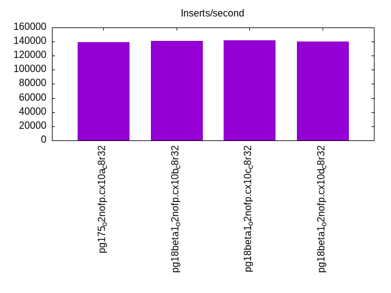
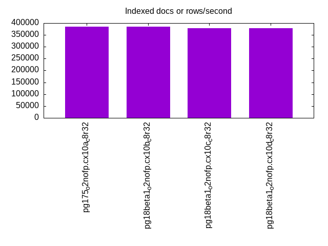
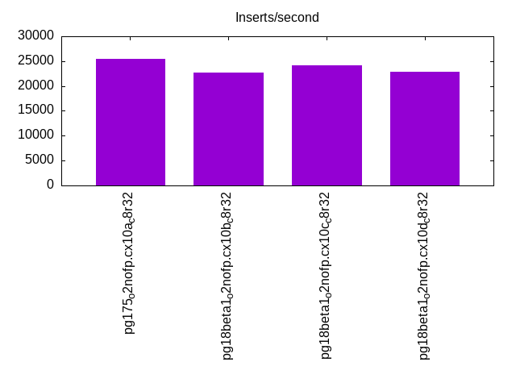
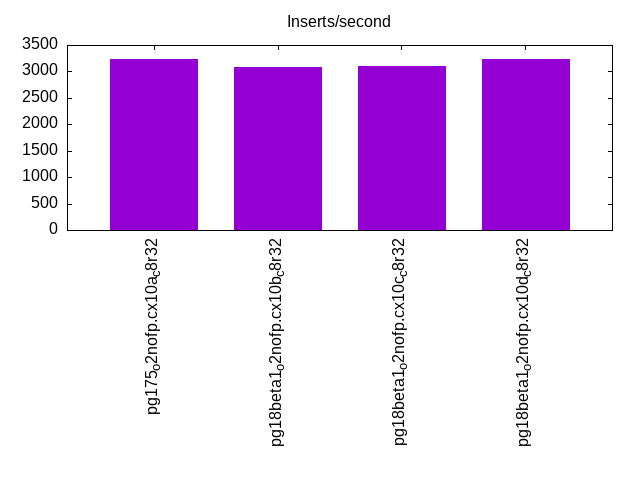
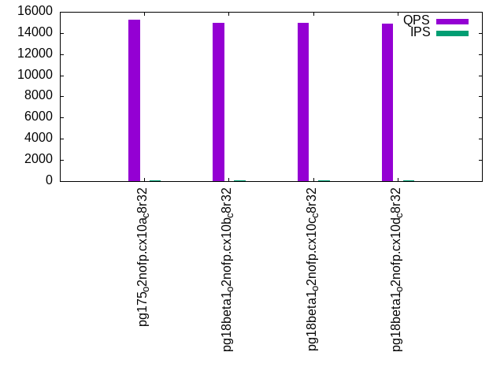
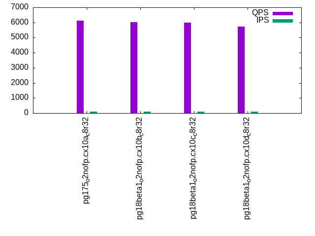
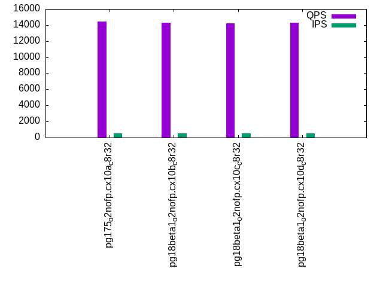
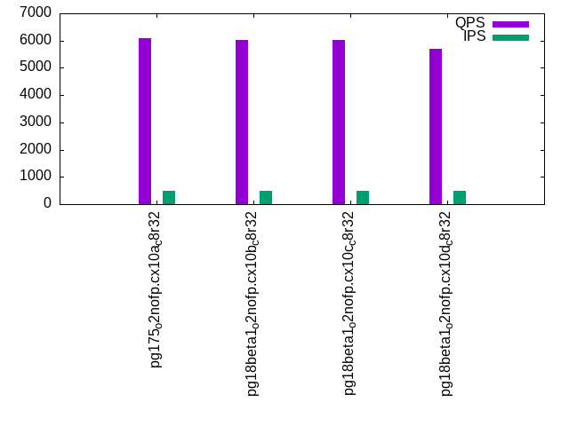
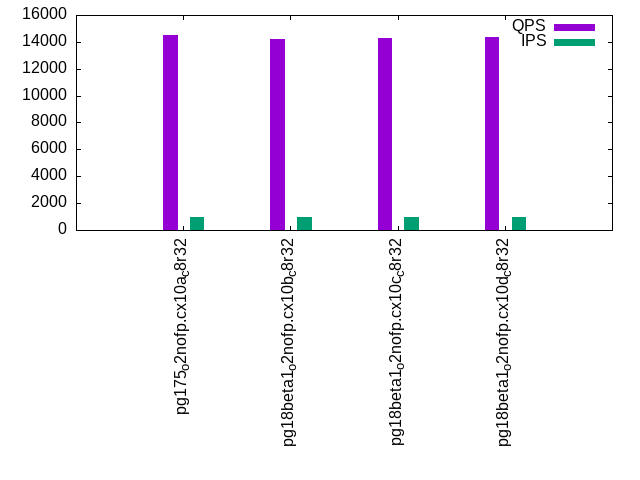
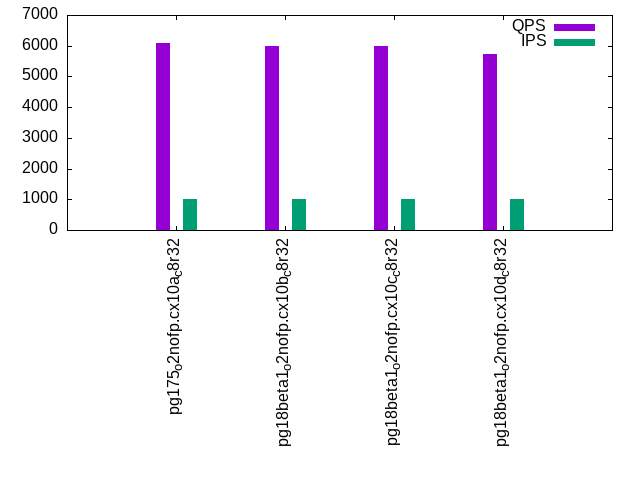

This is a report for the insert benchmark with 20M docs and 1 client(s). It is generated by scripts (bash, awk, sed) and Tufte might not be impressed. An overview of the insert benchmark is here and a short update is here. Below, by DBMS, I mean DBMS+version.config. An example is my8020.c10b40 where my means MySQL, 8020 is version 8.0.20 and c10b40 is the name for the configuration file.
The test server has 8 AMD cores, 32G RAM and an NVMe SSD. It is described here as the PN53. The benchmark was run with 1 client and there were 1 or 3 connections per client (1 for queries or inserts without rate limits, 1+1 for rate limited inserts+deletes). It uses 1 table. It loads 20M rows per table without secondary indexes, creates 3 secondary indexes per table, then inserts 40m+10m rows per table with a delete per insert to avoid growing the table. It then does 6 read+write tests for 1800s each that do queries as fast as possible with 100,100,500,500,1000,1000 inserts/s and the same for deletes/s per client concurrent with the queries. The database is cached by Postgres. Clients and the DBMS share one server. The per-database configs are in the per-database subdirectories here.
The tested DBMS are:
The numbers are inserts/s for l.i0, l.i1 and l.i2, indexed docs (or rows) /s for l.x and queries/s for qr100, qp100 thru qr1000, qp1000" The values are the average rate over the entire test for inserts (IPS) and queries (QPS). The range of values for IPS and QPS is split into 3 parts: bottom 25%, middle 50%, top 25%. Values in the bottom 25% have a red background, values in the top 25% have a green background and values in the middle have no color. A gray background is used for values that can be ignored because the DBMS did not sustain the target insert rate. Red backgrounds are not used when the minimum value is within 80% of the max value.
| dbms | l.i0 | l.x | l.i1 | l.i2 | qr100 | qp100 | qr500 | qp500 | qr1000 | qp1000 |
|---|---|---|---|---|---|---|---|---|---|---|
| pg175_o2nofp.cx10a_c8r32 | 138889 | 384617 | 25413 | 3229 | 15276 | 6135 | 14429 | 6089 | 14499 | 6082 |
| pg18beta1_o2nofp.cx10b_c8r32 | 140845 | 384617 | 22688 | 3089 | 14983 | 6020 | 14276 | 6013 | 14191 | 6003 |
| pg18beta1_o2nofp.cx10c_c8r32 | 141844 | 377360 | 24184 | 3109 | 14966 | 5994 | 14236 | 6011 | 14277 | 5985 |
| pg18beta1_o2nofp.cx10d_c8r32 | 139860 | 377360 | 22792 | 3233 | 14865 | 5734 | 14316 | 5710 | 14369 | 5731 |
This table has relative throughput, throughput for the DBMS relative to the DBMS in the first line, using the absolute throughput from the previous table. Values less than 0.95 have a yellow background. Values greater than 1.05 have a blue background.
| dbms | l.i0 | l.x | l.i1 | l.i2 | qr100 | qp100 | qr500 | qp500 | qr1000 | qp1000 |
|---|---|---|---|---|---|---|---|---|---|---|
| pg175_o2nofp.cx10a_c8r32 | 1.00 | 1.00 | 1.00 | 1.00 | 1.00 | 1.00 | 1.00 | 1.00 | 1.00 | 1.00 |
| pg18beta1_o2nofp.cx10b_c8r32 | 1.01 | 1.00 | 0.89 | 0.96 | 0.98 | 0.98 | 0.99 | 0.99 | 0.98 | 0.99 |
| pg18beta1_o2nofp.cx10c_c8r32 | 1.02 | 0.98 | 0.95 | 0.96 | 0.98 | 0.98 | 0.99 | 0.99 | 0.98 | 0.98 |
| pg18beta1_o2nofp.cx10d_c8r32 | 1.01 | 0.98 | 0.90 | 1.00 | 0.97 | 0.93 | 0.99 | 0.94 | 0.99 | 0.94 |
This lists the average rate of inserts/s for the tests that do inserts concurrent with queries. For such tests the query rate is listed in the table above. The read+write tests are setup so that the insert rate should match the target rate every second. Cells that are not at least 95% of the target have a red background to indicate a failure to satisfy the target.
| dbms | qr100.L1 | qp100.L2 | qr500.L3 | qp500.L4 | qr1000.L5 | qp1000.L6 |
|---|---|---|---|---|---|---|
| pg175_o2nofp.cx10a_c8r32 | 100 | 100 | 500 | 500 | 1000 | 999 |
| pg18beta1_o2nofp.cx10b_c8r32 | 100 | 100 | 500 | 500 | 1000 | 1000 |
| pg18beta1_o2nofp.cx10c_c8r32 | 100 | 100 | 500 | 500 | 999 | 999 |
| pg18beta1_o2nofp.cx10d_c8r32 | 100 | 100 | 500 | 500 | 999 | 999 |
| target | 100 | 100 | 500 | 500 | 1000 | 1000 |
l.i0: load without secondary indexes. Graphs for performance per 1-second interval are here.
Average throughput:
Insert response time histogram: each cell has the percentage of responses that take <= the time in the header and max is the max response time in seconds. For the max column values in the top 25% of the range have a red background and in the bottom 25% of the range have a green background. The red background is not used when the min value is within 80% of the max value.
| dbms | 256us | 1ms | 4ms | 16ms | 64ms | 256ms | 1s | 4s | 16s | gt | max |
|---|---|---|---|---|---|---|---|---|---|---|---|
| pg175_o2nofp.cx10a_c8r32 | 99.982 | 0.018 | 0.003 | ||||||||
| pg18beta1_o2nofp.cx10b_c8r32 | 99.989 | 0.011 | 0.002 | ||||||||
| pg18beta1_o2nofp.cx10c_c8r32 | 99.984 | 0.017 | 0.002 | ||||||||
| pg18beta1_o2nofp.cx10d_c8r32 | 99.980 | 0.020 | 0.002 |
Performance metrics for the DBMS listed above. Some are normalized by throughput, others are not. Legend for results is here.
ips qps rps rmbps wps wmbps rpq rkbpq wpi wkbpi csps cpups cspq cpupq dbgb1 dbgb2 rss maxop p50 p99 tag 138889 0 0 0.0 524.3 59.4 0.000 0.000 0.004 0.438 14300 19.8 0.103 11 1.9 5.2 1.6 0.003 140680 132885 pg175_o2nofp.cx10a_c8r32 140845 0 0 0.0 526.6 59.7 0.000 0.000 0.004 0.434 14333 19.8 0.102 11 1.9 5.2 1.2 0.002 141075 133683 pg18beta1_o2nofp.cx10b_c8r32 141844 0 0 0.0 529.4 60.0 0.000 0.000 0.004 0.433 14363 19.9 0.101 11 1.9 5.2 1.6 0.002 141782 134184 pg18beta1_o2nofp.cx10c_c8r32 139860 0 0 0.0 524.6 59.5 0.000 0.000 0.004 0.435 14210 19.8 0.102 11 1.9 5.2 1.6 0.002 140983 133285 pg18beta1_o2nofp.cx10d_c8r32
l.x: create secondary indexes.
Average throughput:
Performance metrics for the DBMS listed above. Some are normalized by throughput, others are not. Legend for results is here.
ips qps rps rmbps wps wmbps rpq rkbpq wpi wkbpi csps cpups cspq cpupq dbgb1 dbgb2 rss maxop p50 p99 tag 384617 0 0 0.0 616.1 75.4 0.000 0.000 0.002 0.201 1997 11.7 0.005 2 3.9 8.9 2.1 0.002 NA NA pg175_o2nofp.cx10a_c8r32 384617 0 0 0.0 619.5 75.9 0.000 0.000 0.002 0.202 1954 11.7 0.005 2 3.9 8.9 2.1 0.002 NA NA pg18beta1_o2nofp.cx10b_c8r32 377360 0 0 0.0 605.8 74.1 0.000 0.000 0.002 0.201 1933 11.5 0.005 2 3.9 8.9 2.1 0.002 NA NA pg18beta1_o2nofp.cx10c_c8r32 377360 0 0 0.0 602.5 73.7 0.000 0.000 0.002 0.200 1928 11.5 0.005 2 3.9 8.9 2.1 0.002 NA NA pg18beta1_o2nofp.cx10d_c8r32
l.i1: continue load after secondary indexes created with 50 inserts per transaction. Graphs for performance per 1-second interval are here.
Average throughput:
Insert response time histogram: each cell has the percentage of responses that take <= the time in the header and max is the max response time in seconds. For the max column values in the top 25% of the range have a red background and in the bottom 25% of the range have a green background. The red background is not used when the min value is within 80% of the max value.
| dbms | 256us | 1ms | 4ms | 16ms | 64ms | 256ms | 1s | 4s | 16s | gt | max |
|---|---|---|---|---|---|---|---|---|---|---|---|
| pg175_o2nofp.cx10a_c8r32 | 61.423 | 38.576 | nonzero | 0.001 | 0.030 | ||||||
| pg18beta1_o2nofp.cx10b_c8r32 | 55.584 | 44.411 | 0.004 | 0.001 | 0.059 | ||||||
| pg18beta1_o2nofp.cx10c_c8r32 | 52.173 | 47.818 | 0.002 | 0.008 | 0.050 | ||||||
| pg18beta1_o2nofp.cx10d_c8r32 | 54.231 | 45.767 | 0.001 | 0.001 | 0.028 |
Delete response time histogram: each cell has the percentage of responses that take <= the time in the header and max is the max response time in seconds. For the max column values in the top 25% of the range have a red background and in the bottom 25% of the range have a green background. The red background is not used when the min value is within 80% of the max value.
| dbms | 256us | 1ms | 4ms | 16ms | 64ms | 256ms | 1s | 4s | 16s | gt | max |
|---|---|---|---|---|---|---|---|---|---|---|---|
| pg175_o2nofp.cx10a_c8r32 | 27.450 | 61.732 | 10.817 | 0.001 | 0.030 | ||||||
| pg18beta1_o2nofp.cx10b_c8r32 | 26.747 | 56.502 | 16.750 | 0.001 | 0.027 | ||||||
| pg18beta1_o2nofp.cx10c_c8r32 | 27.270 | 69.559 | 3.165 | 0.006 | 0.049 | ||||||
| pg18beta1_o2nofp.cx10d_c8r32 | 27.140 | 56.922 | 15.937 | 0.001 | 0.030 |
Performance metrics for the DBMS listed above. Some are normalized by throughput, others are not. Legend for results is here.
ips qps rps rmbps wps wmbps rpq rkbpq wpi wkbpi csps cpups cspq cpupq dbgb1 dbgb2 rss maxop p50 p99 tag 25413 0 0 0.0 282.8 31.1 0.000 0.000 0.011 1.254 10500 22.1 0.413 70 5.3 32.0 5.3 0.030 22546 8448 pg175_o2nofp.cx10a_c8r32 22688 0 0 0.0 253.2 28.0 0.000 0.000 0.011 1.266 9423 21.4 0.415 75 5.4 32.0 4.2 0.059 15748 8849 pg18beta1_o2nofp.cx10b_c8r32 24184 0 0 0.0 272.0 30.1 0.000 0.000 0.011 1.273 10125 21.9 0.419 72 5.4 32.0 1.5 0.050 18447 9648 pg18beta1_o2nofp.cx10c_c8r32 22792 0 0 0.0 255.7 28.3 0.000 0.000 0.011 1.272 9502 21.5 0.417 75 5.4 32.1 4.8 0.028 15848 9098 pg18beta1_o2nofp.cx10d_c8r32
l.i2: continue load after secondary indexes created with 5 inserts per transaction. Graphs for performance per 1-second interval are here.
Average throughput:
Insert response time histogram: each cell has the percentage of responses that take <= the time in the header and max is the max response time in seconds. For the max column values in the top 25% of the range have a red background and in the bottom 25% of the range have a green background. The red background is not used when the min value is within 80% of the max value.
| dbms | 256us | 1ms | 4ms | 16ms | 64ms | 256ms | 1s | 4s | 16s | gt | max |
|---|---|---|---|---|---|---|---|---|---|---|---|
| pg175_o2nofp.cx10a_c8r32 | 58.218 | 41.781 | nonzero | nonzero | nonzero | 0.036 | |||||
| pg18beta1_o2nofp.cx10b_c8r32 | 56.587 | 43.412 | nonzero | nonzero | nonzero | 0.032 | |||||
| pg18beta1_o2nofp.cx10c_c8r32 | 54.090 | 45.909 | nonzero | nonzero | 0.008 | ||||||
| pg18beta1_o2nofp.cx10d_c8r32 | 56.056 | 43.944 | nonzero | nonzero | 0.032 |
Delete response time histogram: each cell has the percentage of responses that take <= the time in the header and max is the max response time in seconds. For the max column values in the top 25% of the range have a red background and in the bottom 25% of the range have a green background. The red background is not used when the min value is within 80% of the max value.
| dbms | 256us | 1ms | 4ms | 16ms | 64ms | 256ms | 1s | 4s | 16s | gt | max |
|---|---|---|---|---|---|---|---|---|---|---|---|
| pg175_o2nofp.cx10a_c8r32 | 1.727 | 37.206 | 57.944 | 3.123 | nonzero | 0.026 | |||||
| pg18beta1_o2nofp.cx10b_c8r32 | 1.575 | 37.725 | 58.990 | 1.710 | nonzero | 0.033 | |||||
| pg18beta1_o2nofp.cx10c_c8r32 | 1.573 | 38.725 | 58.182 | 1.520 | 0.014 | ||||||
| pg18beta1_o2nofp.cx10d_c8r32 | 1.599 | 38.993 | 58.683 | 0.724 | nonzero | 0.032 |
Performance metrics for the DBMS listed above. Some are normalized by throughput, others are not. Legend for results is here.
ips qps rps rmbps wps wmbps rpq rkbpq wpi wkbpi csps cpups cspq cpupq dbgb1 dbgb2 rss maxop p50 p99 tag 3229 0 0 0.0 55.3 5.5 0.000 0.000 0.017 1.745 12479 15.9 3.865 394 5.4 34.7 5.1 0.036 2375 1020 pg175_o2nofp.cx10a_c8r32 3089 0 0 0.0 53.5 5.2 0.000 0.000 0.017 1.724 11917 15.9 3.858 412 5.4 34.3 0.3 0.032 2110 1100 pg18beta1_o2nofp.cx10b_c8r32 3109 0 0 0.0 54.2 5.3 0.000 0.000 0.017 1.749 12031 15.9 3.869 409 5.4 34.5 1.5 0.008 2180 1080 pg18beta1_o2nofp.cx10c_c8r32 3233 0 0 0.0 55.2 5.4 0.000 0.000 0.017 1.725 12494 16.0 3.865 396 5.4 34.4 0.8 0.032 2275 1200 pg18beta1_o2nofp.cx10d_c8r32
qr100.L1: range queries with 100 insert/s per client. Graphs for performance per 1-second interval are here.
Average throughput:
Query response time histogram: each cell has the percentage of responses that take <= the time in the header and max is the max response time in seconds. For max values in the top 25% of the range have a red background and in the bottom 25% of the range have a green background. The red background is not used when the min value is within 80% of the max value.
| dbms | 256us | 1ms | 4ms | 16ms | 64ms | 256ms | 1s | 4s | 16s | gt | max |
|---|---|---|---|---|---|---|---|---|---|---|---|
| pg175_o2nofp.cx10a_c8r32 | 99.998 | 0.002 | 0.001 | ||||||||
| pg18beta1_o2nofp.cx10b_c8r32 | 99.998 | 0.002 | nonzero | 0.001 | |||||||
| pg18beta1_o2nofp.cx10c_c8r32 | 99.998 | 0.002 | 0.001 | ||||||||
| pg18beta1_o2nofp.cx10d_c8r32 | 99.998 | 0.002 | 0.001 |
Insert response time histogram: each cell has the percentage of responses that take <= the time in the header and max is the max response time in seconds. For max values in the top 25% of the range have a red background and in the bottom 25% of the range have a green background. The red background is not used when the min value is within 80% of the max value.
| dbms | 256us | 1ms | 4ms | 16ms | 64ms | 256ms | 1s | 4s | 16s | gt | max |
|---|---|---|---|---|---|---|---|---|---|---|---|
| pg175_o2nofp.cx10a_c8r32 | 0.194 | 99.778 | 0.028 | 0.006 | |||||||
| pg18beta1_o2nofp.cx10b_c8r32 | 0.528 | 99.417 | 0.056 | 0.006 | |||||||
| pg18beta1_o2nofp.cx10c_c8r32 | 2.472 | 97.472 | 0.056 | 0.006 | |||||||
| pg18beta1_o2nofp.cx10d_c8r32 | 0.667 | 99.306 | 0.028 | 0.006 |
Delete response time histogram: each cell has the percentage of responses that take <= the time in the header and max is the max response time in seconds. For max values in the top 25% of the range have a red background and in the bottom 25% of the range have a green background. The red background is not used when the min value is within 80% of the max value.
| dbms | 256us | 1ms | 4ms | 16ms | 64ms | 256ms | 1s | 4s | 16s | gt | max |
|---|---|---|---|---|---|---|---|---|---|---|---|
| pg175_o2nofp.cx10a_c8r32 | 52.250 | 47.750 | 0.002 | ||||||||
| pg18beta1_o2nofp.cx10b_c8r32 | 50.917 | 49.083 | 0.002 | ||||||||
| pg18beta1_o2nofp.cx10c_c8r32 | 54.194 | 45.806 | 0.002 | ||||||||
| pg18beta1_o2nofp.cx10d_c8r32 | 49.583 | 50.417 | 0.002 |
Performance metrics for the DBMS listed above. Some are normalized by throughput, others are not. Legend for results is here.
ips qps rps rmbps wps wmbps rpq rkbpq wpi wkbpi csps cpups cspq cpupq dbgb1 dbgb2 rss maxop p50 p99 tag 100 15276 0 0.0 10.5 0.6 0.000 0.000 0.105 6.258 58351 12.4 3.820 65 5.4 34.7 0.1 0.001 15262 15038 pg175_o2nofp.cx10a_c8r32 100 14983 0 0.0 10.6 0.6 0.000 0.000 0.106 6.294 57198 12.4 3.818 66 5.4 34.4 0.1 0.001 15005 14526 pg18beta1_o2nofp.cx10b_c8r32 100 14966 0 0.0 10.5 0.6 0.000 0.000 0.105 6.290 57134 12.4 3.818 66 5.4 34.5 0.2 0.001 15005 14558 pg18beta1_o2nofp.cx10c_c8r32 100 14865 0 0.0 10.5 0.6 0.000 0.000 0.105 6.295 56782 12.4 3.820 67 5.4 34.4 0.1 0.001 14894 14429 pg18beta1_o2nofp.cx10d_c8r32
qp100.L2: point queries with 100 insert/s per client. Graphs for performance per 1-second interval are here.
Average throughput:
Query response time histogram: each cell has the percentage of responses that take <= the time in the header and max is the max response time in seconds. For max values in the top 25% of the range have a red background and in the bottom 25% of the range have a green background. The red background is not used when the min value is within 80% of the max value.
| dbms | 256us | 1ms | 4ms | 16ms | 64ms | 256ms | 1s | 4s | 16s | gt | max |
|---|---|---|---|---|---|---|---|---|---|---|---|
| pg175_o2nofp.cx10a_c8r32 | 98.083 | 1.917 | nonzero | 0.001 | |||||||
| pg18beta1_o2nofp.cx10b_c8r32 | 98.522 | 1.478 | nonzero | 0.001 | |||||||
| pg18beta1_o2nofp.cx10c_c8r32 | 98.161 | 1.839 | nonzero | 0.002 | |||||||
| pg18beta1_o2nofp.cx10d_c8r32 | 97.997 | 2.003 | nonzero | 0.001 |
Insert response time histogram: each cell has the percentage of responses that take <= the time in the header and max is the max response time in seconds. For max values in the top 25% of the range have a red background and in the bottom 25% of the range have a green background. The red background is not used when the min value is within 80% of the max value.
| dbms | 256us | 1ms | 4ms | 16ms | 64ms | 256ms | 1s | 4s | 16s | gt | max |
|---|---|---|---|---|---|---|---|---|---|---|---|
| pg175_o2nofp.cx10a_c8r32 | 99.944 | 0.056 | 0.005 | ||||||||
| pg18beta1_o2nofp.cx10b_c8r32 | 99.944 | 0.056 | 0.006 | ||||||||
| pg18beta1_o2nofp.cx10c_c8r32 | 99.722 | 0.278 | 0.010 | ||||||||
| pg18beta1_o2nofp.cx10d_c8r32 | 99.944 | 0.056 | 0.006 |
Delete response time histogram: each cell has the percentage of responses that take <= the time in the header and max is the max response time in seconds. For max values in the top 25% of the range have a red background and in the bottom 25% of the range have a green background. The red background is not used when the min value is within 80% of the max value.
| dbms | 256us | 1ms | 4ms | 16ms | 64ms | 256ms | 1s | 4s | 16s | gt | max |
|---|---|---|---|---|---|---|---|---|---|---|---|
| pg175_o2nofp.cx10a_c8r32 | 7.028 | 92.944 | 0.028 | 0.004 | |||||||
| pg18beta1_o2nofp.cx10b_c8r32 | 0.722 | 99.250 | 0.028 | 0.005 | |||||||
| pg18beta1_o2nofp.cx10c_c8r32 | 4.194 | 95.778 | 0.028 | 0.004 | |||||||
| pg18beta1_o2nofp.cx10d_c8r32 | 0.167 | 99.806 | 0.028 | 0.004 |
Performance metrics for the DBMS listed above. Some are normalized by throughput, others are not. Legend for results is here.
ips qps rps rmbps wps wmbps rpq rkbpq wpi wkbpi csps cpups cspq cpupq dbgb1 dbgb2 rss maxop p50 p99 tag 100 6135 0 0.0 39.4 1.4 0.000 0.000 0.394 14.108 25094 12.9 4.090 168 5.4 34.7 0.5 0.001 6175 5919 pg175_o2nofp.cx10a_c8r32 100 6020 0 0.0 39.4 1.4 0.000 0.000 0.394 14.116 24653 12.8 4.095 170 5.4 34.4 0.1 0.001 6015 5903 pg18beta1_o2nofp.cx10b_c8r32 100 5994 0 0.0 39.3 1.4 0.000 0.000 0.393 14.146 24540 12.7 4.094 169 5.4 34.5 0.1 0.002 5967 5903 pg18beta1_o2nofp.cx10c_c8r32 100 5734 0 0.0 39.5 1.4 0.000 0.000 0.396 14.137 23547 13.4 4.107 187 5.4 34.4 0.1 0.001 5711 5519 pg18beta1_o2nofp.cx10d_c8r32
qr500.L3: range queries with 500 insert/s per client. Graphs for performance per 1-second interval are here.
Average throughput:
Query response time histogram: each cell has the percentage of responses that take <= the time in the header and max is the max response time in seconds. For max values in the top 25% of the range have a red background and in the bottom 25% of the range have a green background. The red background is not used when the min value is within 80% of the max value.
| dbms | 256us | 1ms | 4ms | 16ms | 64ms | 256ms | 1s | 4s | 16s | gt | max |
|---|---|---|---|---|---|---|---|---|---|---|---|
| pg175_o2nofp.cx10a_c8r32 | 99.997 | 0.003 | nonzero | 0.002 | |||||||
| pg18beta1_o2nofp.cx10b_c8r32 | 99.996 | 0.004 | nonzero | 0.002 | |||||||
| pg18beta1_o2nofp.cx10c_c8r32 | 99.996 | 0.004 | nonzero | nonzero | 0.031 | ||||||
| pg18beta1_o2nofp.cx10d_c8r32 | 99.996 | 0.004 | nonzero | 0.003 |
Insert response time histogram: each cell has the percentage of responses that take <= the time in the header and max is the max response time in seconds. For max values in the top 25% of the range have a red background and in the bottom 25% of the range have a green background. The red background is not used when the min value is within 80% of the max value.
| dbms | 256us | 1ms | 4ms | 16ms | 64ms | 256ms | 1s | 4s | 16s | gt | max |
|---|---|---|---|---|---|---|---|---|---|---|---|
| pg175_o2nofp.cx10a_c8r32 | 26.056 | 73.922 | 0.022 | 0.010 | |||||||
| pg18beta1_o2nofp.cx10b_c8r32 | 29.656 | 70.322 | 0.022 | 0.007 | |||||||
| pg18beta1_o2nofp.cx10c_c8r32 | 29.072 | 70.706 | 0.222 | 0.011 | |||||||
| pg18beta1_o2nofp.cx10d_c8r32 | 28.811 | 71.144 | 0.044 | 0.010 |
Delete response time histogram: each cell has the percentage of responses that take <= the time in the header and max is the max response time in seconds. For max values in the top 25% of the range have a red background and in the bottom 25% of the range have a green background. The red background is not used when the min value is within 80% of the max value.
| dbms | 256us | 1ms | 4ms | 16ms | 64ms | 256ms | 1s | 4s | 16s | gt | max |
|---|---|---|---|---|---|---|---|---|---|---|---|
| pg175_o2nofp.cx10a_c8r32 | 19.417 | 79.467 | 1.117 | 0.007 | |||||||
| pg18beta1_o2nofp.cx10b_c8r32 | 22.367 | 77.011 | 0.622 | 0.006 | |||||||
| pg18beta1_o2nofp.cx10c_c8r32 | 15.650 | 83.594 | 0.756 | 0.011 | |||||||
| pg18beta1_o2nofp.cx10d_c8r32 | 18.456 | 80.933 | 0.611 | 0.010 |
Performance metrics for the DBMS listed above. Some are normalized by throughput, others are not. Legend for results is here.
ips qps rps rmbps wps wmbps rpq rkbpq wpi wkbpi csps cpups cspq cpupq dbgb1 dbgb2 rss maxop p50 p99 tag 500 14429 0 0.0 49.5 1.8 0.000 0.000 0.099 3.678 55214 13.0 3.827 72 5.4 34.7 0.3 0.002 14382 13709 pg175_o2nofp.cx10a_c8r32 500 14276 0 0.0 49.5 1.8 0.000 0.000 0.099 3.689 54668 12.9 3.829 72 5.4 34.4 0.3 0.002 14254 13550 pg18beta1_o2nofp.cx10b_c8r32 500 14236 0 0.0 49.6 1.8 0.000 0.000 0.099 3.745 54486 13.0 3.827 73 5.4 34.5 0.3 0.031 14238 13550 pg18beta1_o2nofp.cx10c_c8r32 500 14316 0 0.0 49.6 1.8 0.000 0.000 0.099 3.695 54788 12.9 3.827 72 5.4 34.4 4.7 0.003 14318 13629 pg18beta1_o2nofp.cx10d_c8r32
qp500.L4: point queries with 500 insert/s per client. Graphs for performance per 1-second interval are here.
Average throughput:
Query response time histogram: each cell has the percentage of responses that take <= the time in the header and max is the max response time in seconds. For max values in the top 25% of the range have a red background and in the bottom 25% of the range have a green background. The red background is not used when the min value is within 80% of the max value.
| dbms | 256us | 1ms | 4ms | 16ms | 64ms | 256ms | 1s | 4s | 16s | gt | max |
|---|---|---|---|---|---|---|---|---|---|---|---|
| pg175_o2nofp.cx10a_c8r32 | 98.123 | 1.877 | nonzero | 0.002 | |||||||
| pg18beta1_o2nofp.cx10b_c8r32 | 98.171 | 1.829 | nonzero | 0.002 | |||||||
| pg18beta1_o2nofp.cx10c_c8r32 | 98.004 | 1.996 | nonzero | 0.001 | |||||||
| pg18beta1_o2nofp.cx10d_c8r32 | 97.839 | 2.161 | nonzero | 0.002 |
Insert response time histogram: each cell has the percentage of responses that take <= the time in the header and max is the max response time in seconds. For max values in the top 25% of the range have a red background and in the bottom 25% of the range have a green background. The red background is not used when the min value is within 80% of the max value.
| dbms | 256us | 1ms | 4ms | 16ms | 64ms | 256ms | 1s | 4s | 16s | gt | max |
|---|---|---|---|---|---|---|---|---|---|---|---|
| pg175_o2nofp.cx10a_c8r32 | 10.622 | 89.239 | 0.139 | 0.010 | |||||||
| pg18beta1_o2nofp.cx10b_c8r32 | 15.678 | 84.294 | 0.028 | 0.010 | |||||||
| pg18beta1_o2nofp.cx10c_c8r32 | 15.822 | 84.161 | 0.011 | 0.006 | 0.021 | ||||||
| pg18beta1_o2nofp.cx10d_c8r32 | 13.567 | 86.306 | 0.128 | 0.013 |
Delete response time histogram: each cell has the percentage of responses that take <= the time in the header and max is the max response time in seconds. For max values in the top 25% of the range have a red background and in the bottom 25% of the range have a green background. The red background is not used when the min value is within 80% of the max value.
| dbms | 256us | 1ms | 4ms | 16ms | 64ms | 256ms | 1s | 4s | 16s | gt | max |
|---|---|---|---|---|---|---|---|---|---|---|---|
| pg175_o2nofp.cx10a_c8r32 | 17.572 | 81.078 | 1.350 | 0.010 | |||||||
| pg18beta1_o2nofp.cx10b_c8r32 | 16.906 | 82.217 | 0.878 | 0.005 | |||||||
| pg18beta1_o2nofp.cx10c_c8r32 | 17.500 | 81.672 | 0.822 | 0.006 | 0.019 | ||||||
| pg18beta1_o2nofp.cx10d_c8r32 | 17.178 | 82.028 | 0.794 | 0.011 |
Performance metrics for the DBMS listed above. Some are normalized by throughput, others are not. Legend for results is here.
ips qps rps rmbps wps wmbps rpq rkbpq wpi wkbpi csps cpups cspq cpupq dbgb1 dbgb2 rss maxop p50 p99 tag 500 6089 0 0.0 27.8 2.3 0.000 0.000 0.056 4.666 25024 13.5 4.110 177 5.5 34.1 0.3 0.002 6111 5919 pg175_o2nofp.cx10a_c8r32 500 6013 0 0.0 28.1 2.2 0.000 0.000 0.056 4.568 24729 13.5 4.113 180 5.4 34.0 0.2 0.002 5999 5903 pg18beta1_o2nofp.cx10b_c8r32 500 6011 0 0.0 28.2 2.2 0.000 0.000 0.056 4.570 24726 13.5 4.113 180 5.4 34.0 0.3 0.001 5999 5903 pg18beta1_o2nofp.cx10c_c8r32 500 5710 0 0.0 28.3 2.3 0.000 0.000 0.057 4.636 23555 13.5 4.126 189 5.5 34.1 0.3 0.002 5663 5519 pg18beta1_o2nofp.cx10d_c8r32
qr1000.L5: range queries with 1000 insert/s per client. Graphs for performance per 1-second interval are here.
Average throughput:
Query response time histogram: each cell has the percentage of responses that take <= the time in the header and max is the max response time in seconds. For max values in the top 25% of the range have a red background and in the bottom 25% of the range have a green background. The red background is not used when the min value is within 80% of the max value.
| dbms | 256us | 1ms | 4ms | 16ms | 64ms | 256ms | 1s | 4s | 16s | gt | max |
|---|---|---|---|---|---|---|---|---|---|---|---|
| pg175_o2nofp.cx10a_c8r32 | 99.996 | 0.004 | nonzero | 0.002 | |||||||
| pg18beta1_o2nofp.cx10b_c8r32 | 99.994 | 0.006 | nonzero | nonzero | 0.006 | ||||||
| pg18beta1_o2nofp.cx10c_c8r32 | 99.994 | 0.006 | nonzero | 0.003 | |||||||
| pg18beta1_o2nofp.cx10d_c8r32 | 99.994 | 0.006 | nonzero | 0.004 |
Insert response time histogram: each cell has the percentage of responses that take <= the time in the header and max is the max response time in seconds. For max values in the top 25% of the range have a red background and in the bottom 25% of the range have a green background. The red background is not used when the min value is within 80% of the max value.
| dbms | 256us | 1ms | 4ms | 16ms | 64ms | 256ms | 1s | 4s | 16s | gt | max |
|---|---|---|---|---|---|---|---|---|---|---|---|
| pg175_o2nofp.cx10a_c8r32 | 42.983 | 57.008 | 0.008 | 0.006 | |||||||
| pg18beta1_o2nofp.cx10b_c8r32 | 42.094 | 57.847 | 0.058 | 0.010 | |||||||
| pg18beta1_o2nofp.cx10c_c8r32 | 48.808 | 51.178 | 0.014 | 0.010 | |||||||
| pg18beta1_o2nofp.cx10d_c8r32 | 43.917 | 56.078 | 0.006 | 0.005 |
Delete response time histogram: each cell has the percentage of responses that take <= the time in the header and max is the max response time in seconds. For max values in the top 25% of the range have a red background and in the bottom 25% of the range have a green background. The red background is not used when the min value is within 80% of the max value.
| dbms | 256us | 1ms | 4ms | 16ms | 64ms | 256ms | 1s | 4s | 16s | gt | max |
|---|---|---|---|---|---|---|---|---|---|---|---|
| pg175_o2nofp.cx10a_c8r32 | 19.372 | 80.078 | 0.550 | 0.005 | |||||||
| pg18beta1_o2nofp.cx10b_c8r32 | 16.508 | 83.033 | 0.458 | 0.011 | |||||||
| pg18beta1_o2nofp.cx10c_c8r32 | 18.342 | 81.094 | 0.564 | 0.005 | |||||||
| pg18beta1_o2nofp.cx10d_c8r32 | 17.772 | 81.839 | 0.389 | 0.005 |
Performance metrics for the DBMS listed above. Some are normalized by throughput, others are not. Legend for results is here.
ips qps rps rmbps wps wmbps rpq rkbpq wpi wkbpi csps cpups cspq cpupq dbgb1 dbgb2 rss maxop p50 p99 tag 1000 14499 0 0.0 30.0 2.7 0.000 0.000 0.030 2.735 55663 13.4 3.839 74 5.5 32.4 0.3 0.002 14526 13789 pg175_o2nofp.cx10a_c8r32 1000 14191 0 0.0 33.8 2.7 0.000 0.000 0.034 2.714 54511 13.3 3.841 75 5.5 32.4 0.3 0.006 14190 13470 pg18beta1_o2nofp.cx10b_c8r32 999 14277 0 0.0 33.3 2.6 0.000 0.000 0.033 2.701 54848 13.3 3.842 75 5.5 32.4 0.3 0.003 14301 13566 pg18beta1_o2nofp.cx10c_c8r32 999 14369 0 0.0 33.4 2.6 0.000 0.000 0.033 2.708 55201 13.4 3.842 75 5.5 32.4 0.3 0.004 14382 13614 pg18beta1_o2nofp.cx10d_c8r32
qp1000.L6: point queries with 1000 insert/s per client. Graphs for performance per 1-second interval are here.
Average throughput:
Query response time histogram: each cell has the percentage of responses that take <= the time in the header and max is the max response time in seconds. For max values in the top 25% of the range have a red background and in the bottom 25% of the range have a green background. The red background is not used when the min value is within 80% of the max value.
| dbms | 256us | 1ms | 4ms | 16ms | 64ms | 256ms | 1s | 4s | 16s | gt | max |
|---|---|---|---|---|---|---|---|---|---|---|---|
| pg175_o2nofp.cx10a_c8r32 | 97.914 | 2.086 | nonzero | 0.001 | |||||||
| pg18beta1_o2nofp.cx10b_c8r32 | 98.214 | 1.786 | nonzero | 0.002 | |||||||
| pg18beta1_o2nofp.cx10c_c8r32 | 98.057 | 1.943 | nonzero | 0.002 | |||||||
| pg18beta1_o2nofp.cx10d_c8r32 | 98.041 | 1.959 | nonzero | 0.002 |
Insert response time histogram: each cell has the percentage of responses that take <= the time in the header and max is the max response time in seconds. For max values in the top 25% of the range have a red background and in the bottom 25% of the range have a green background. The red background is not used when the min value is within 80% of the max value.
| dbms | 256us | 1ms | 4ms | 16ms | 64ms | 256ms | 1s | 4s | 16s | gt | max |
|---|---|---|---|---|---|---|---|---|---|---|---|
| pg175_o2nofp.cx10a_c8r32 | 40.986 | 59.003 | 0.006 | 0.006 | 0.026 | ||||||
| pg18beta1_o2nofp.cx10b_c8r32 | 36.233 | 63.756 | 0.011 | 0.009 | |||||||
| pg18beta1_o2nofp.cx10c_c8r32 | 38.386 | 61.606 | 0.008 | 0.008 | |||||||
| pg18beta1_o2nofp.cx10d_c8r32 | 33.478 | 66.508 | 0.014 | 0.009 |
Delete response time histogram: each cell has the percentage of responses that take <= the time in the header and max is the max response time in seconds. For max values in the top 25% of the range have a red background and in the bottom 25% of the range have a green background. The red background is not used when the min value is within 80% of the max value.
| dbms | 256us | 1ms | 4ms | 16ms | 64ms | 256ms | 1s | 4s | 16s | gt | max |
|---|---|---|---|---|---|---|---|---|---|---|---|
| pg175_o2nofp.cx10a_c8r32 | 28.578 | 70.817 | 0.600 | 0.006 | 0.023 | ||||||
| pg18beta1_o2nofp.cx10b_c8r32 | 18.167 | 81.297 | 0.536 | 0.005 | |||||||
| pg18beta1_o2nofp.cx10c_c8r32 | 16.631 | 82.753 | 0.617 | 0.005 | |||||||
| pg18beta1_o2nofp.cx10d_c8r32 | 19.450 | 80.044 | 0.506 | 0.005 |
Performance metrics for the DBMS listed above. Some are normalized by throughput, others are not. Legend for results is here.
ips qps rps rmbps wps wmbps rpq rkbpq wpi wkbpi csps cpups cspq cpupq dbgb1 dbgb2 rss maxop p50 p99 tag 999 6082 0 0.0 29.8 2.7 0.000 0.000 0.030 2.744 25188 13.6 4.142 179 5.5 30.3 0.4 0.001 6111 5903 pg175_o2nofp.cx10a_c8r32 1000 6003 0 0.0 28.1 2.7 0.000 0.000 0.028 2.736 24862 13.6 4.141 181 5.5 30.2 0.3 0.002 5983 5887 pg18beta1_o2nofp.cx10b_c8r32 999 5985 0 0.0 28.1 2.7 0.000 0.000 0.028 2.731 24810 13.6 4.145 182 5.5 30.2 0.3 0.002 5967 5887 pg18beta1_o2nofp.cx10c_c8r32 999 5731 0 0.0 28.2 2.7 0.000 0.000 0.028 2.724 23830 14.1 4.158 197 5.5 30.2 0.3 0.002 5727 5503 pg18beta1_o2nofp.cx10d_c8r32
l.i0: load without secondary indexes
Performance metrics for all DBMS, not just the ones listed above. Some are normalized by throughput, others are not. Legend for results is here.
ips qps rps rmbps wps wmbps rpq rkbpq wpi wkbpi csps cpups cspq cpupq dbgb1 dbgb2 rss maxop p50 p99 tag 138889 0 0 0.0 524.3 59.4 0.000 0.000 0.004 0.438 14300 19.8 0.103 11 1.9 5.2 1.6 0.003 140680 132885 pg175_o2nofp.cx10a_c8r32 140845 0 0 0.0 526.6 59.7 0.000 0.000 0.004 0.434 14333 19.8 0.102 11 1.9 5.2 1.2 0.002 141075 133683 pg18beta1_o2nofp.cx10b_c8r32 141844 0 0 0.0 529.4 60.0 0.000 0.000 0.004 0.433 14363 19.9 0.101 11 1.9 5.2 1.6 0.002 141782 134184 pg18beta1_o2nofp.cx10c_c8r32 139860 0 0 0.0 524.6 59.5 0.000 0.000 0.004 0.435 14210 19.8 0.102 11 1.9 5.2 1.6 0.002 140983 133285 pg18beta1_o2nofp.cx10d_c8r32
l.x: create secondary indexes
Performance metrics for all DBMS, not just the ones listed above. Some are normalized by throughput, others are not. Legend for results is here.
ips qps rps rmbps wps wmbps rpq rkbpq wpi wkbpi csps cpups cspq cpupq dbgb1 dbgb2 rss maxop p50 p99 tag 384617 0 0 0.0 616.1 75.4 0.000 0.000 0.002 0.201 1997 11.7 0.005 2 3.9 8.9 2.1 0.002 NA NA pg175_o2nofp.cx10a_c8r32 384617 0 0 0.0 619.5 75.9 0.000 0.000 0.002 0.202 1954 11.7 0.005 2 3.9 8.9 2.1 0.002 NA NA pg18beta1_o2nofp.cx10b_c8r32 377360 0 0 0.0 605.8 74.1 0.000 0.000 0.002 0.201 1933 11.5 0.005 2 3.9 8.9 2.1 0.002 NA NA pg18beta1_o2nofp.cx10c_c8r32 377360 0 0 0.0 602.5 73.7 0.000 0.000 0.002 0.200 1928 11.5 0.005 2 3.9 8.9 2.1 0.002 NA NA pg18beta1_o2nofp.cx10d_c8r32
l.i1: continue load after secondary indexes created with 50 inserts per transaction
Performance metrics for all DBMS, not just the ones listed above. Some are normalized by throughput, others are not. Legend for results is here.
ips qps rps rmbps wps wmbps rpq rkbpq wpi wkbpi csps cpups cspq cpupq dbgb1 dbgb2 rss maxop p50 p99 tag 25413 0 0 0.0 282.8 31.1 0.000 0.000 0.011 1.254 10500 22.1 0.413 70 5.3 32.0 5.3 0.030 22546 8448 pg175_o2nofp.cx10a_c8r32 22688 0 0 0.0 253.2 28.0 0.000 0.000 0.011 1.266 9423 21.4 0.415 75 5.4 32.0 4.2 0.059 15748 8849 pg18beta1_o2nofp.cx10b_c8r32 24184 0 0 0.0 272.0 30.1 0.000 0.000 0.011 1.273 10125 21.9 0.419 72 5.4 32.0 1.5 0.050 18447 9648 pg18beta1_o2nofp.cx10c_c8r32 22792 0 0 0.0 255.7 28.3 0.000 0.000 0.011 1.272 9502 21.5 0.417 75 5.4 32.1 4.8 0.028 15848 9098 pg18beta1_o2nofp.cx10d_c8r32
l.i2: continue load after secondary indexes created with 5 inserts per transaction
Performance metrics for all DBMS, not just the ones listed above. Some are normalized by throughput, others are not. Legend for results is here.
ips qps rps rmbps wps wmbps rpq rkbpq wpi wkbpi csps cpups cspq cpupq dbgb1 dbgb2 rss maxop p50 p99 tag 3229 0 0 0.0 55.3 5.5 0.000 0.000 0.017 1.745 12479 15.9 3.865 394 5.4 34.7 5.1 0.036 2375 1020 pg175_o2nofp.cx10a_c8r32 3089 0 0 0.0 53.5 5.2 0.000 0.000 0.017 1.724 11917 15.9 3.858 412 5.4 34.3 0.3 0.032 2110 1100 pg18beta1_o2nofp.cx10b_c8r32 3109 0 0 0.0 54.2 5.3 0.000 0.000 0.017 1.749 12031 15.9 3.869 409 5.4 34.5 1.5 0.008 2180 1080 pg18beta1_o2nofp.cx10c_c8r32 3233 0 0 0.0 55.2 5.4 0.000 0.000 0.017 1.725 12494 16.0 3.865 396 5.4 34.4 0.8 0.032 2275 1200 pg18beta1_o2nofp.cx10d_c8r32
qr100.L1: range queries with 100 insert/s per client
Performance metrics for all DBMS, not just the ones listed above. Some are normalized by throughput, others are not. Legend for results is here.
ips qps rps rmbps wps wmbps rpq rkbpq wpi wkbpi csps cpups cspq cpupq dbgb1 dbgb2 rss maxop p50 p99 tag 100 15276 0 0.0 10.5 0.6 0.000 0.000 0.105 6.258 58351 12.4 3.820 65 5.4 34.7 0.1 0.001 15262 15038 pg175_o2nofp.cx10a_c8r32 100 14983 0 0.0 10.6 0.6 0.000 0.000 0.106 6.294 57198 12.4 3.818 66 5.4 34.4 0.1 0.001 15005 14526 pg18beta1_o2nofp.cx10b_c8r32 100 14966 0 0.0 10.5 0.6 0.000 0.000 0.105 6.290 57134 12.4 3.818 66 5.4 34.5 0.2 0.001 15005 14558 pg18beta1_o2nofp.cx10c_c8r32 100 14865 0 0.0 10.5 0.6 0.000 0.000 0.105 6.295 56782 12.4 3.820 67 5.4 34.4 0.1 0.001 14894 14429 pg18beta1_o2nofp.cx10d_c8r32
qp100.L2: point queries with 100 insert/s per client
Performance metrics for all DBMS, not just the ones listed above. Some are normalized by throughput, others are not. Legend for results is here.
ips qps rps rmbps wps wmbps rpq rkbpq wpi wkbpi csps cpups cspq cpupq dbgb1 dbgb2 rss maxop p50 p99 tag 100 6135 0 0.0 39.4 1.4 0.000 0.000 0.394 14.108 25094 12.9 4.090 168 5.4 34.7 0.5 0.001 6175 5919 pg175_o2nofp.cx10a_c8r32 100 6020 0 0.0 39.4 1.4 0.000 0.000 0.394 14.116 24653 12.8 4.095 170 5.4 34.4 0.1 0.001 6015 5903 pg18beta1_o2nofp.cx10b_c8r32 100 5994 0 0.0 39.3 1.4 0.000 0.000 0.393 14.146 24540 12.7 4.094 169 5.4 34.5 0.1 0.002 5967 5903 pg18beta1_o2nofp.cx10c_c8r32 100 5734 0 0.0 39.5 1.4 0.000 0.000 0.396 14.137 23547 13.4 4.107 187 5.4 34.4 0.1 0.001 5711 5519 pg18beta1_o2nofp.cx10d_c8r32
qr500.L3: range queries with 500 insert/s per client
Performance metrics for all DBMS, not just the ones listed above. Some are normalized by throughput, others are not. Legend for results is here.
ips qps rps rmbps wps wmbps rpq rkbpq wpi wkbpi csps cpups cspq cpupq dbgb1 dbgb2 rss maxop p50 p99 tag 500 14429 0 0.0 49.5 1.8 0.000 0.000 0.099 3.678 55214 13.0 3.827 72 5.4 34.7 0.3 0.002 14382 13709 pg175_o2nofp.cx10a_c8r32 500 14276 0 0.0 49.5 1.8 0.000 0.000 0.099 3.689 54668 12.9 3.829 72 5.4 34.4 0.3 0.002 14254 13550 pg18beta1_o2nofp.cx10b_c8r32 500 14236 0 0.0 49.6 1.8 0.000 0.000 0.099 3.745 54486 13.0 3.827 73 5.4 34.5 0.3 0.031 14238 13550 pg18beta1_o2nofp.cx10c_c8r32 500 14316 0 0.0 49.6 1.8 0.000 0.000 0.099 3.695 54788 12.9 3.827 72 5.4 34.4 4.7 0.003 14318 13629 pg18beta1_o2nofp.cx10d_c8r32
qp500.L4: point queries with 500 insert/s per client
Performance metrics for all DBMS, not just the ones listed above. Some are normalized by throughput, others are not. Legend for results is here.
ips qps rps rmbps wps wmbps rpq rkbpq wpi wkbpi csps cpups cspq cpupq dbgb1 dbgb2 rss maxop p50 p99 tag 500 6089 0 0.0 27.8 2.3 0.000 0.000 0.056 4.666 25024 13.5 4.110 177 5.5 34.1 0.3 0.002 6111 5919 pg175_o2nofp.cx10a_c8r32 500 6013 0 0.0 28.1 2.2 0.000 0.000 0.056 4.568 24729 13.5 4.113 180 5.4 34.0 0.2 0.002 5999 5903 pg18beta1_o2nofp.cx10b_c8r32 500 6011 0 0.0 28.2 2.2 0.000 0.000 0.056 4.570 24726 13.5 4.113 180 5.4 34.0 0.3 0.001 5999 5903 pg18beta1_o2nofp.cx10c_c8r32 500 5710 0 0.0 28.3 2.3 0.000 0.000 0.057 4.636 23555 13.5 4.126 189 5.5 34.1 0.3 0.002 5663 5519 pg18beta1_o2nofp.cx10d_c8r32
qr1000.L5: range queries with 1000 insert/s per client
Performance metrics for all DBMS, not just the ones listed above. Some are normalized by throughput, others are not. Legend for results is here.
ips qps rps rmbps wps wmbps rpq rkbpq wpi wkbpi csps cpups cspq cpupq dbgb1 dbgb2 rss maxop p50 p99 tag 1000 14499 0 0.0 30.0 2.7 0.000 0.000 0.030 2.735 55663 13.4 3.839 74 5.5 32.4 0.3 0.002 14526 13789 pg175_o2nofp.cx10a_c8r32 1000 14191 0 0.0 33.8 2.7 0.000 0.000 0.034 2.714 54511 13.3 3.841 75 5.5 32.4 0.3 0.006 14190 13470 pg18beta1_o2nofp.cx10b_c8r32 999 14277 0 0.0 33.3 2.6 0.000 0.000 0.033 2.701 54848 13.3 3.842 75 5.5 32.4 0.3 0.003 14301 13566 pg18beta1_o2nofp.cx10c_c8r32 999 14369 0 0.0 33.4 2.6 0.000 0.000 0.033 2.708 55201 13.4 3.842 75 5.5 32.4 0.3 0.004 14382 13614 pg18beta1_o2nofp.cx10d_c8r32
qp1000.L6: point queries with 1000 insert/s per client
Performance metrics for all DBMS, not just the ones listed above. Some are normalized by throughput, others are not. Legend for results is here.
ips qps rps rmbps wps wmbps rpq rkbpq wpi wkbpi csps cpups cspq cpupq dbgb1 dbgb2 rss maxop p50 p99 tag 999 6082 0 0.0 29.8 2.7 0.000 0.000 0.030 2.744 25188 13.6 4.142 179 5.5 30.3 0.4 0.001 6111 5903 pg175_o2nofp.cx10a_c8r32 1000 6003 0 0.0 28.1 2.7 0.000 0.000 0.028 2.736 24862 13.6 4.141 181 5.5 30.2 0.3 0.002 5983 5887 pg18beta1_o2nofp.cx10b_c8r32 999 5985 0 0.0 28.1 2.7 0.000 0.000 0.028 2.731 24810 13.6 4.145 182 5.5 30.2 0.3 0.002 5967 5887 pg18beta1_o2nofp.cx10c_c8r32 999 5731 0 0.0 28.2 2.7 0.000 0.000 0.028 2.724 23830 14.1 4.158 197 5.5 30.2 0.3 0.002 5727 5503 pg18beta1_o2nofp.cx10d_c8r32
Insert response time histogram
256us 1ms 4ms 16ms 64ms 256ms 1s 4s 16s gt max tag 0.000 99.982 0.018 0.000 0.000 0.000 0.000 0.000 0.000 0.000 0.003 pg175_o2nofp.cx10a_c8r32 0.000 99.989 0.011 0.000 0.000 0.000 0.000 0.000 0.000 0.000 0.002 pg18beta1_o2nofp.cx10b_c8r32 0.000 99.984 0.017 0.000 0.000 0.000 0.000 0.000 0.000 0.000 0.002 pg18beta1_o2nofp.cx10c_c8r32 0.000 99.980 0.020 0.000 0.000 0.000 0.000 0.000 0.000 0.000 0.002 pg18beta1_o2nofp.cx10d_c8r32
TODO - determine whether there is data for create index response time
Insert response time histogram
256us 1ms 4ms 16ms 64ms 256ms 1s 4s 16s gt max tag 0.000 61.423 38.576 nonzero 0.001 0.000 0.000 0.000 0.000 0.000 0.030 pg175_o2nofp.cx10a_c8r32 0.000 55.584 44.411 0.004 0.001 0.000 0.000 0.000 0.000 0.000 0.059 pg18beta1_o2nofp.cx10b_c8r32 0.000 52.173 47.818 0.002 0.008 0.000 0.000 0.000 0.000 0.000 0.050 pg18beta1_o2nofp.cx10c_c8r32 0.000 54.231 45.767 0.001 0.001 0.000 0.000 0.000 0.000 0.000 0.028 pg18beta1_o2nofp.cx10d_c8r32
Delete response time histogram
256us 1ms 4ms 16ms 64ms 256ms 1s 4s 16s gt max tag 0.000 27.450 61.732 10.817 0.001 0.000 0.000 0.000 0.000 0.000 0.030 pg175_o2nofp.cx10a_c8r32 0.000 26.747 56.502 16.750 0.001 0.000 0.000 0.000 0.000 0.000 0.027 pg18beta1_o2nofp.cx10b_c8r32 0.000 27.270 69.559 3.165 0.006 0.000 0.000 0.000 0.000 0.000 0.049 pg18beta1_o2nofp.cx10c_c8r32 0.000 27.140 56.922 15.937 0.001 0.000 0.000 0.000 0.000 0.000 0.030 pg18beta1_o2nofp.cx10d_c8r32
Insert response time histogram
256us 1ms 4ms 16ms 64ms 256ms 1s 4s 16s gt max tag 58.218 41.781 nonzero nonzero nonzero 0.000 0.000 0.000 0.000 0.000 0.036 pg175_o2nofp.cx10a_c8r32 56.587 43.412 nonzero nonzero nonzero 0.000 0.000 0.000 0.000 0.000 0.032 pg18beta1_o2nofp.cx10b_c8r32 54.090 45.909 nonzero nonzero 0.000 0.000 0.000 0.000 0.000 0.000 0.008 pg18beta1_o2nofp.cx10c_c8r32 56.056 43.944 nonzero 0.000 nonzero 0.000 0.000 0.000 0.000 0.000 0.032 pg18beta1_o2nofp.cx10d_c8r32
Delete response time histogram
256us 1ms 4ms 16ms 64ms 256ms 1s 4s 16s gt max tag 1.727 37.206 57.944 3.123 nonzero 0.000 0.000 0.000 0.000 0.000 0.026 pg175_o2nofp.cx10a_c8r32 1.575 37.725 58.990 1.710 nonzero 0.000 0.000 0.000 0.000 0.000 0.033 pg18beta1_o2nofp.cx10b_c8r32 1.573 38.725 58.182 1.520 0.000 0.000 0.000 0.000 0.000 0.000 0.014 pg18beta1_o2nofp.cx10c_c8r32 1.599 38.993 58.683 0.724 nonzero 0.000 0.000 0.000 0.000 0.000 0.032 pg18beta1_o2nofp.cx10d_c8r32
Query response time histogram
256us 1ms 4ms 16ms 64ms 256ms 1s 4s 16s gt max tag 99.998 0.002 0.000 0.000 0.000 0.000 0.000 0.000 0.000 0.000 0.001 pg175_o2nofp.cx10a_c8r32 99.998 0.002 nonzero 0.000 0.000 0.000 0.000 0.000 0.000 0.000 0.001 pg18beta1_o2nofp.cx10b_c8r32 99.998 0.002 0.000 0.000 0.000 0.000 0.000 0.000 0.000 0.000 0.001 pg18beta1_o2nofp.cx10c_c8r32 99.998 0.002 0.000 0.000 0.000 0.000 0.000 0.000 0.000 0.000 0.001 pg18beta1_o2nofp.cx10d_c8r32
Insert response time histogram
256us 1ms 4ms 16ms 64ms 256ms 1s 4s 16s gt max tag 0.000 0.194 99.778 0.028 0.000 0.000 0.000 0.000 0.000 0.000 0.006 pg175_o2nofp.cx10a_c8r32 0.000 0.528 99.417 0.056 0.000 0.000 0.000 0.000 0.000 0.000 0.006 pg18beta1_o2nofp.cx10b_c8r32 0.000 2.472 97.472 0.056 0.000 0.000 0.000 0.000 0.000 0.000 0.006 pg18beta1_o2nofp.cx10c_c8r32 0.000 0.667 99.306 0.028 0.000 0.000 0.000 0.000 0.000 0.000 0.006 pg18beta1_o2nofp.cx10d_c8r32
Delete response time histogram
256us 1ms 4ms 16ms 64ms 256ms 1s 4s 16s gt max tag 0.000 52.250 47.750 0.000 0.000 0.000 0.000 0.000 0.000 0.000 0.002 pg175_o2nofp.cx10a_c8r32 0.000 50.917 49.083 0.000 0.000 0.000 0.000 0.000 0.000 0.000 0.002 pg18beta1_o2nofp.cx10b_c8r32 0.000 54.194 45.806 0.000 0.000 0.000 0.000 0.000 0.000 0.000 0.002 pg18beta1_o2nofp.cx10c_c8r32 0.000 49.583 50.417 0.000 0.000 0.000 0.000 0.000 0.000 0.000 0.002 pg18beta1_o2nofp.cx10d_c8r32
Query response time histogram
256us 1ms 4ms 16ms 64ms 256ms 1s 4s 16s gt max tag 98.083 1.917 nonzero 0.000 0.000 0.000 0.000 0.000 0.000 0.000 0.001 pg175_o2nofp.cx10a_c8r32 98.522 1.478 nonzero 0.000 0.000 0.000 0.000 0.000 0.000 0.000 0.001 pg18beta1_o2nofp.cx10b_c8r32 98.161 1.839 nonzero 0.000 0.000 0.000 0.000 0.000 0.000 0.000 0.002 pg18beta1_o2nofp.cx10c_c8r32 97.997 2.003 nonzero 0.000 0.000 0.000 0.000 0.000 0.000 0.000 0.001 pg18beta1_o2nofp.cx10d_c8r32
Insert response time histogram
256us 1ms 4ms 16ms 64ms 256ms 1s 4s 16s gt max tag 0.000 0.000 99.944 0.056 0.000 0.000 0.000 0.000 0.000 0.000 0.005 pg175_o2nofp.cx10a_c8r32 0.000 0.000 99.944 0.056 0.000 0.000 0.000 0.000 0.000 0.000 0.006 pg18beta1_o2nofp.cx10b_c8r32 0.000 0.000 99.722 0.278 0.000 0.000 0.000 0.000 0.000 0.000 0.010 pg18beta1_o2nofp.cx10c_c8r32 0.000 0.000 99.944 0.056 0.000 0.000 0.000 0.000 0.000 0.000 0.006 pg18beta1_o2nofp.cx10d_c8r32
Delete response time histogram
256us 1ms 4ms 16ms 64ms 256ms 1s 4s 16s gt max tag 0.000 7.028 92.944 0.028 0.000 0.000 0.000 0.000 0.000 0.000 0.004 pg175_o2nofp.cx10a_c8r32 0.000 0.722 99.250 0.028 0.000 0.000 0.000 0.000 0.000 0.000 0.005 pg18beta1_o2nofp.cx10b_c8r32 0.000 4.194 95.778 0.028 0.000 0.000 0.000 0.000 0.000 0.000 0.004 pg18beta1_o2nofp.cx10c_c8r32 0.000 0.167 99.806 0.028 0.000 0.000 0.000 0.000 0.000 0.000 0.004 pg18beta1_o2nofp.cx10d_c8r32
Query response time histogram
256us 1ms 4ms 16ms 64ms 256ms 1s 4s 16s gt max tag 99.997 0.003 nonzero 0.000 0.000 0.000 0.000 0.000 0.000 0.000 0.002 pg175_o2nofp.cx10a_c8r32 99.996 0.004 nonzero 0.000 0.000 0.000 0.000 0.000 0.000 0.000 0.002 pg18beta1_o2nofp.cx10b_c8r32 99.996 0.004 nonzero 0.000 nonzero 0.000 0.000 0.000 0.000 0.000 0.031 pg18beta1_o2nofp.cx10c_c8r32 99.996 0.004 nonzero 0.000 0.000 0.000 0.000 0.000 0.000 0.000 0.003 pg18beta1_o2nofp.cx10d_c8r32
Insert response time histogram
256us 1ms 4ms 16ms 64ms 256ms 1s 4s 16s gt max tag 0.000 26.056 73.922 0.022 0.000 0.000 0.000 0.000 0.000 0.000 0.010 pg175_o2nofp.cx10a_c8r32 0.000 29.656 70.322 0.022 0.000 0.000 0.000 0.000 0.000 0.000 0.007 pg18beta1_o2nofp.cx10b_c8r32 0.000 29.072 70.706 0.222 0.000 0.000 0.000 0.000 0.000 0.000 0.011 pg18beta1_o2nofp.cx10c_c8r32 0.000 28.811 71.144 0.044 0.000 0.000 0.000 0.000 0.000 0.000 0.010 pg18beta1_o2nofp.cx10d_c8r32
Delete response time histogram
256us 1ms 4ms 16ms 64ms 256ms 1s 4s 16s gt max tag 0.000 19.417 79.467 1.117 0.000 0.000 0.000 0.000 0.000 0.000 0.007 pg175_o2nofp.cx10a_c8r32 0.000 22.367 77.011 0.622 0.000 0.000 0.000 0.000 0.000 0.000 0.006 pg18beta1_o2nofp.cx10b_c8r32 0.000 15.650 83.594 0.756 0.000 0.000 0.000 0.000 0.000 0.000 0.011 pg18beta1_o2nofp.cx10c_c8r32 0.000 18.456 80.933 0.611 0.000 0.000 0.000 0.000 0.000 0.000 0.010 pg18beta1_o2nofp.cx10d_c8r32
Query response time histogram
256us 1ms 4ms 16ms 64ms 256ms 1s 4s 16s gt max tag 98.123 1.877 nonzero 0.000 0.000 0.000 0.000 0.000 0.000 0.000 0.002 pg175_o2nofp.cx10a_c8r32 98.171 1.829 nonzero 0.000 0.000 0.000 0.000 0.000 0.000 0.000 0.002 pg18beta1_o2nofp.cx10b_c8r32 98.004 1.996 nonzero 0.000 0.000 0.000 0.000 0.000 0.000 0.000 0.001 pg18beta1_o2nofp.cx10c_c8r32 97.839 2.161 nonzero 0.000 0.000 0.000 0.000 0.000 0.000 0.000 0.002 pg18beta1_o2nofp.cx10d_c8r32
Insert response time histogram
256us 1ms 4ms 16ms 64ms 256ms 1s 4s 16s gt max tag 0.000 10.622 89.239 0.139 0.000 0.000 0.000 0.000 0.000 0.000 0.010 pg175_o2nofp.cx10a_c8r32 0.000 15.678 84.294 0.028 0.000 0.000 0.000 0.000 0.000 0.000 0.010 pg18beta1_o2nofp.cx10b_c8r32 0.000 15.822 84.161 0.011 0.006 0.000 0.000 0.000 0.000 0.000 0.021 pg18beta1_o2nofp.cx10c_c8r32 0.000 13.567 86.306 0.128 0.000 0.000 0.000 0.000 0.000 0.000 0.013 pg18beta1_o2nofp.cx10d_c8r32
Delete response time histogram
256us 1ms 4ms 16ms 64ms 256ms 1s 4s 16s gt max tag 0.000 17.572 81.078 1.350 0.000 0.000 0.000 0.000 0.000 0.000 0.010 pg175_o2nofp.cx10a_c8r32 0.000 16.906 82.217 0.878 0.000 0.000 0.000 0.000 0.000 0.000 0.005 pg18beta1_o2nofp.cx10b_c8r32 0.000 17.500 81.672 0.822 0.006 0.000 0.000 0.000 0.000 0.000 0.019 pg18beta1_o2nofp.cx10c_c8r32 0.000 17.178 82.028 0.794 0.000 0.000 0.000 0.000 0.000 0.000 0.011 pg18beta1_o2nofp.cx10d_c8r32
Query response time histogram
256us 1ms 4ms 16ms 64ms 256ms 1s 4s 16s gt max tag 99.996 0.004 nonzero 0.000 0.000 0.000 0.000 0.000 0.000 0.000 0.002 pg175_o2nofp.cx10a_c8r32 99.994 0.006 nonzero nonzero 0.000 0.000 0.000 0.000 0.000 0.000 0.006 pg18beta1_o2nofp.cx10b_c8r32 99.994 0.006 nonzero 0.000 0.000 0.000 0.000 0.000 0.000 0.000 0.003 pg18beta1_o2nofp.cx10c_c8r32 99.994 0.006 nonzero 0.000 0.000 0.000 0.000 0.000 0.000 0.000 0.004 pg18beta1_o2nofp.cx10d_c8r32
Insert response time histogram
256us 1ms 4ms 16ms 64ms 256ms 1s 4s 16s gt max tag 0.000 42.983 57.008 0.008 0.000 0.000 0.000 0.000 0.000 0.000 0.006 pg175_o2nofp.cx10a_c8r32 0.000 42.094 57.847 0.058 0.000 0.000 0.000 0.000 0.000 0.000 0.010 pg18beta1_o2nofp.cx10b_c8r32 0.000 48.808 51.178 0.014 0.000 0.000 0.000 0.000 0.000 0.000 0.010 pg18beta1_o2nofp.cx10c_c8r32 0.000 43.917 56.078 0.006 0.000 0.000 0.000 0.000 0.000 0.000 0.005 pg18beta1_o2nofp.cx10d_c8r32
Delete response time histogram
256us 1ms 4ms 16ms 64ms 256ms 1s 4s 16s gt max tag 0.000 19.372 80.078 0.550 0.000 0.000 0.000 0.000 0.000 0.000 0.005 pg175_o2nofp.cx10a_c8r32 0.000 16.508 83.033 0.458 0.000 0.000 0.000 0.000 0.000 0.000 0.011 pg18beta1_o2nofp.cx10b_c8r32 0.000 18.342 81.094 0.564 0.000 0.000 0.000 0.000 0.000 0.000 0.005 pg18beta1_o2nofp.cx10c_c8r32 0.000 17.772 81.839 0.389 0.000 0.000 0.000 0.000 0.000 0.000 0.005 pg18beta1_o2nofp.cx10d_c8r32
Query response time histogram
256us 1ms 4ms 16ms 64ms 256ms 1s 4s 16s gt max tag 97.914 2.086 nonzero 0.000 0.000 0.000 0.000 0.000 0.000 0.000 0.001 pg175_o2nofp.cx10a_c8r32 98.214 1.786 nonzero 0.000 0.000 0.000 0.000 0.000 0.000 0.000 0.002 pg18beta1_o2nofp.cx10b_c8r32 98.057 1.943 nonzero 0.000 0.000 0.000 0.000 0.000 0.000 0.000 0.002 pg18beta1_o2nofp.cx10c_c8r32 98.041 1.959 nonzero 0.000 0.000 0.000 0.000 0.000 0.000 0.000 0.002 pg18beta1_o2nofp.cx10d_c8r32
Insert response time histogram
256us 1ms 4ms 16ms 64ms 256ms 1s 4s 16s gt max tag 0.000 40.986 59.003 0.006 0.006 0.000 0.000 0.000 0.000 0.000 0.026 pg175_o2nofp.cx10a_c8r32 0.000 36.233 63.756 0.011 0.000 0.000 0.000 0.000 0.000 0.000 0.009 pg18beta1_o2nofp.cx10b_c8r32 0.000 38.386 61.606 0.008 0.000 0.000 0.000 0.000 0.000 0.000 0.008 pg18beta1_o2nofp.cx10c_c8r32 0.000 33.478 66.508 0.014 0.000 0.000 0.000 0.000 0.000 0.000 0.009 pg18beta1_o2nofp.cx10d_c8r32
Delete response time histogram
256us 1ms 4ms 16ms 64ms 256ms 1s 4s 16s gt max tag 0.000 28.578 70.817 0.600 0.006 0.000 0.000 0.000 0.000 0.000 0.023 pg175_o2nofp.cx10a_c8r32 0.000 18.167 81.297 0.536 0.000 0.000 0.000 0.000 0.000 0.000 0.005 pg18beta1_o2nofp.cx10b_c8r32 0.000 16.631 82.753 0.617 0.000 0.000 0.000 0.000 0.000 0.000 0.005 pg18beta1_o2nofp.cx10c_c8r32 0.000 19.450 80.044 0.506 0.000 0.000 0.000 0.000 0.000 0.000 0.005 pg18beta1_o2nofp.cx10d_c8r32